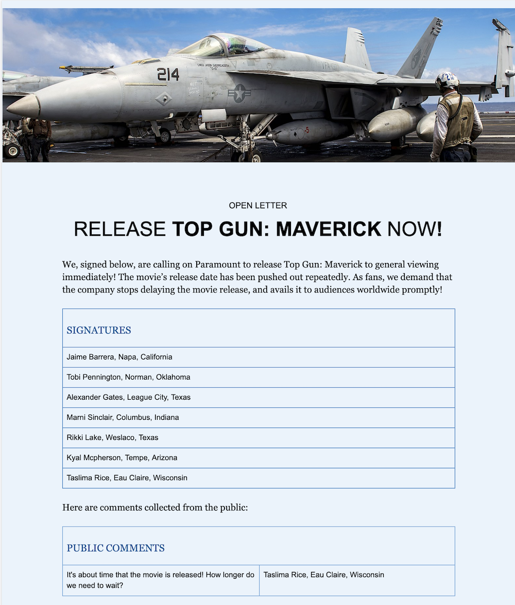
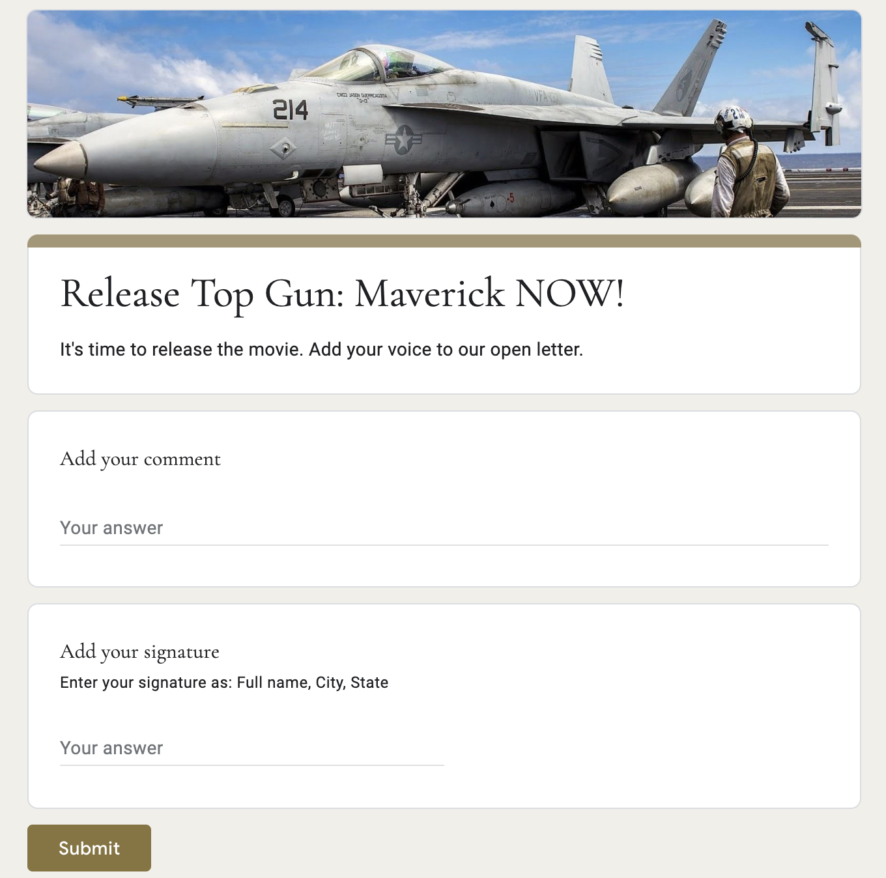
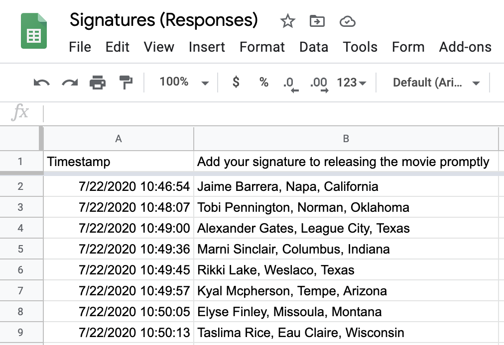

Google Forms to Google Doc
Google Apps Script

Key highlights
- Two Google Forms collect signatures and comments
- Google Doc updates in real-time with form submissions
- Entries also stored in Google Sheets
Summary
The client needed to collect signatures and comments on an open letter. A Google Apps Script records each form submission directly into a dedicated table inside a Google Doc.
Data capture via Google Forms
Two Google Forms capture submissions of public signatures and comments.


Form submissions stored in sheets
Each of the forms records entries in dedicated Google Sheets.
Updated Google Doc
When users submit new entries into the Google Forms, the entries are appended onto a Google Doc that serves as an open letter.
Each form records into a dedicated table inside the document.
Technologies and libraries in project
Google Apps Script
Google Forms Service
Google Document Service
Google Sheets
eslint
prettier